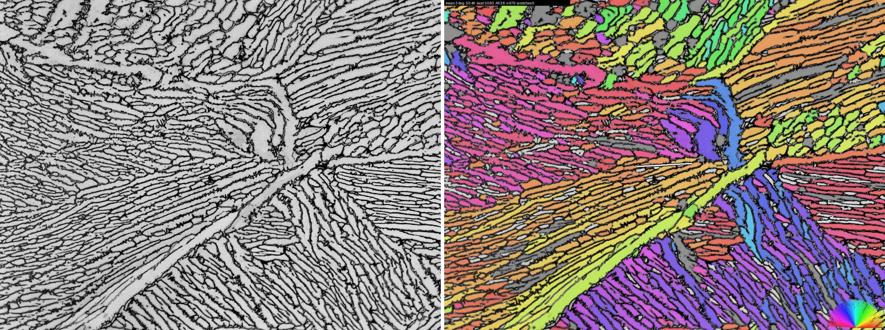
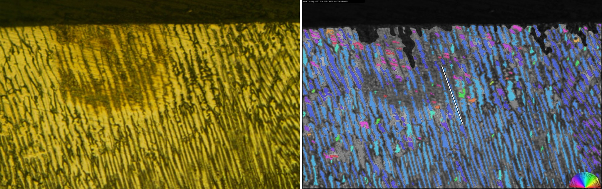
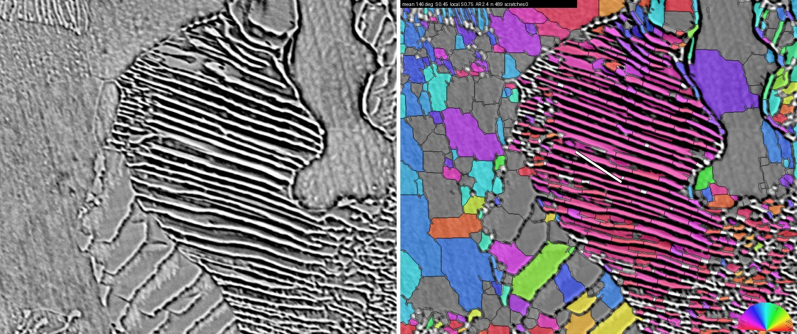
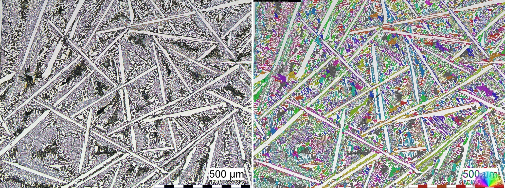
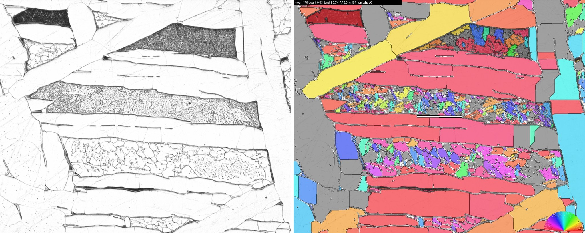
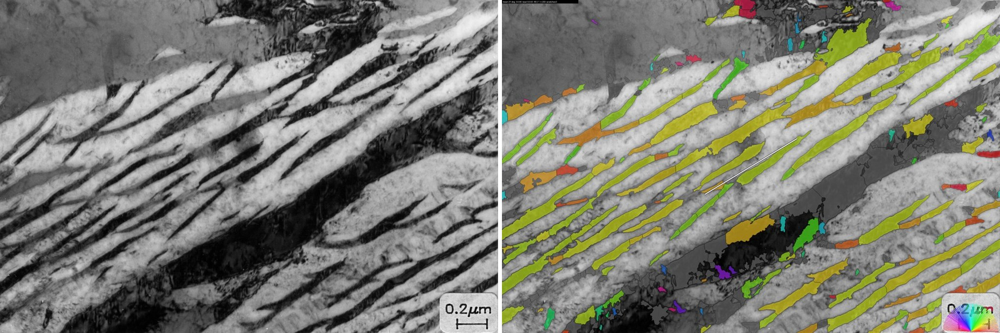

| set | checks | median measurements | by eye | original | drawing |
|---|
sem_user
boundaries: ambiguous profile; boundary reading by default (the agent review checks it) |
twin not trusted (profile x1.80, shape x1.24); twin holdout 7.48; rotation 0.45; upsampled 3x | direction 86°, S 0.43, AR 2.2, flakes/image 1303 | Colony-scale orientation plausible (colours follow the colonies); single laths often merged: at 3-4 px per flake the screenshot is at the resolution limit. Needs full-resolution originals. |  |
ti64_dev
boundaries: minority phase is a connected thin network |
twin trusted (profile x1.06, shape x1.16); twin holdout 0.49; rotation 0.44 | direction 19°, S 0.57, AR 3.9, flakes/image 644 | Good: α laths outlined one by one, colonies coloured consistently, grain-boundary α separated. The scientist's review (F-17) is the real check. |  |
banded_islands_ma17081847
phase: minority phase is separate blobs about as thick as the matrix |
twin trusted (profile x1.14, shape x1.33); twin holdout 1.00; rotation 0.47 | direction 1°, S 0.92, AR 2.7, flakes/image 142 | Fair: the dark bands are outlined and aligned (S 0.93), some merged or cut; dark textured patches partly missed. |  |
ti_basketweave_ma19010080
boundaries: ambiguous profile; boundary reading by default (the agent review checks it) |
twin trusted (profile x1.25, shape x1.14); twin holdout 0.60; rotation 0.88 | direction 97°, S 0.19, AR 1.7, flakes/image 197 | Good: laths outlined individually in each colony; blocky pieces greyed out; S is low by nature (basketweave). |  |
colour_lamellar_ma16020804
phase: minority phase is separate blobs about as thick as the matrix |
twin trusted (profile x1.14, shape x1.05); twin holdout 0.43; rotation 0.27; upsampled 3x | direction 110°, S 0.85, AR 2.8, flakes/image 693 | Good below the resin edge: bright lamellae outlined one by one; fragmented near the top edge. |  |
duplex_bands_mixed
phase: minority phase is separate blobs about as thick as the matrix |
twin trusted (profile x1.24, shape x1.02); twin holdout 0.38; rotation 0.27 | direction 5°, S 0.98, AR 4.2, flakes/image 338 | Good: the bright bands are outlined and aligned. |  |
purple_flakes_L10
phase: minority phase is separate blobs about as thick as the matrix |
twin trusted (profile x1.25, shape x1.12); twin holdout 1.90; rotation 0.06 | direction 180°, S 0.99, AR 3.2, flakes/image 19 | Good: the purple bands are the flakes (fixed tonight; before, the matrix was measured). Only ~19 flakes per image: wide intervals. |  |
tial_lamellar_L26
boundaries: ambiguous profile; boundary reading by default (the agent review checks it) |
twin not trusted (profile x1.37, shape x1.36); twin holdout 2.78; rotation 0.97 | direction 117°, S 0.56, AR 3.0, flakes/image 989 | Poor with the boundary reading: regions span several lamellae (multi-level BSE image). |  |
pearlite_L02
boundaries: ambiguous profile; boundary reading by default (the agent review checks it) |
twin trusted (profile x1.14, shape x1.15); twin holdout 0.72; rotation 1.97 | direction 146°, S 0.45, AR 2.4, flakes/image 489 | Mixed: lamellae inside the colony right; the ferrite grains around it are counted as flakes too (two scales flagged), so S and AR mix two populations. Rotation check fails. |  |
needles_L23
phase: minority phase is separate blobs about as thick as the matrix |
twin not trusted (profile x1.41, shape x1.32); twin holdout 4.20; rotation 0.70 | direction 48°, S 0.04, AR 2.1, flakes/image 10015 | Wrong scale: measures the fine eutectic texture, not the big cementite needles. Not flagged automatically (the needles are in the other phase). |  |
widmanstaetten_L18
boundaries: ambiguous profile; boundary reading by default (the agent review checks it) |
twin not trusted (profile x1.73, shape x1.35); twin holdout 2.05; rotation 0.35 | direction 179°, S 0.53, AR 2.0, flakes/image 397 | Fair: the white plates are measured now (no longer taken for grain-boundary α); the pearlite patches between them are cut into small pieces that enter the statistics (two scales flagged). |  |
bainite_L06
boundaries: ambiguous profile; boundary reading by default (the agent review checks it) |
twin not trusted (profile x2.00, shape x1.15); twin holdout 2.62; rotation 0.68 | direction 31°, S 0.78, AR 2.3, flakes/image 330 | Fair: bright plates between the dark needles outlined, orientation right; some plates merged. Whether the bright plates or the dark needles are 'the flakes' is the user's call (--mode phase --flake-phase dark). |  |
tial_regions_L26
regions: set by the user |
twin not trusted (profile x1.17, shape x1.53); twin holdout 2.91; rotation 0.55 | direction 116°, S 0.58, AR 4.4, flakes/image 4199 | Good with the regions reading: lamellae resolved one by one (4,199), colonies coloured consistently; twin not trusted, so no accuracy number. |  |
| set | what the agent did | checks, cost | original | drawing after the agent |
|---|
sem_user_live
final reading: boundaries; ambiguous profile; boundary reading by default (the agent review checks it) |
round 1: review reject, reading right: yes; plan: reading keep
round 2: review reject, reading right: yes; plan: reading keep
first review: Reading: the real image is a BSE micrograph of Ti-6Al-4V. It shows dark alpha laths separated by thin bright beta ribs, arranged in columnar prior-beta grains with basketweave and colony regions. Flakes between thin lines is therefore the right reading, with moderate confidence (~70%). The phase reading would give nearly the same objects. The problem is how well the reading is executed.
Failures on the real image:
(... |
rotation 0.97; twin not trusted; settings set from the drawings; $0.265 |
 |
tial_lamellar_L26_live
final reading: regions; switched by the agent after review 1: Confidence about 0.7. The real micrograph looks like a back-scattered electron image of lamellar TiAl/Ti. Lamellae appear |
round 1: review reject, reading right: no; plan: reading regions
round 2: review reject, reading right: yes; plan: reading keep
first review: Confidence about 0.7. The real micrograph looks like a back-scattered electron image of lamellar TiAl/Ti. Lamellae appear as strips of several grey levels (white, light grey, dark grey, black) that touch each other. There are no thin dark boundary lines between them. The boundary reading (flakes between thin lines) therefore has nothing reliable to follow, and the regions reading is the one a metallographer would use... |
rotation 0.58; twin not trusted; settings set from the drawings; $0.258 |
 |
bainite_L06_live
final reading: phase; switched by the agent after review 1: The real image is a TEM bright-field micrograph of bainite (0.2 µm bar). It shows bright ferrite between discrete dark len |
round 1: review reject, reading right: no; plan: reading phase, phase dark
round 2: review reject, reading right: yes; plan: reading keep, phase dark
first review: The real image is a TEM bright-field micrograph of bainite (0.2 µm bar). It shows bright ferrite between discrete dark lenticular plates at roughly 30°. The plates vary in width, taper and stop part-way, so they are not continuous thin boundary lines. That makes the boundary reading a poor fit: the bright regions are a connected matrix, not closed flakes. I judge the phase reading, with the dark plates as flakes in a... |
rotation 0.64; twin trusted; $0.289 |
 |
needles_L23_live
final reading: phase; minority phase is separate blobs about as thick as the matrix |
round 1: review reject, reading right: no; plan: reading phase, phase bright
round 2: review reject, reading right: yes; plan: reading keep, phase bright
first review: Reading: the phase reading is the right family, but the wrong phase was chosen. The micrograph is labelled primary cementite (white cast iron). What a metallographer measures are the long, straight, bright primary-cementite plates. They run up to roughly 1 mm, are tens of µm thick, and cross each other at many angles. In the drawing those plates are left white and unmeasured. The coloured 'flakes' are something else:... |
rotation 0.40; twin not trusted; settings set from the drawings; $0.26 |
 |